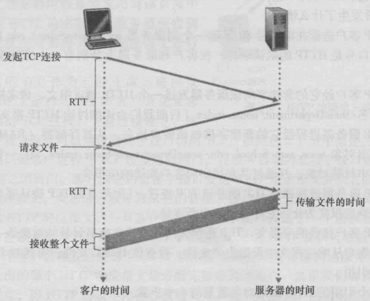
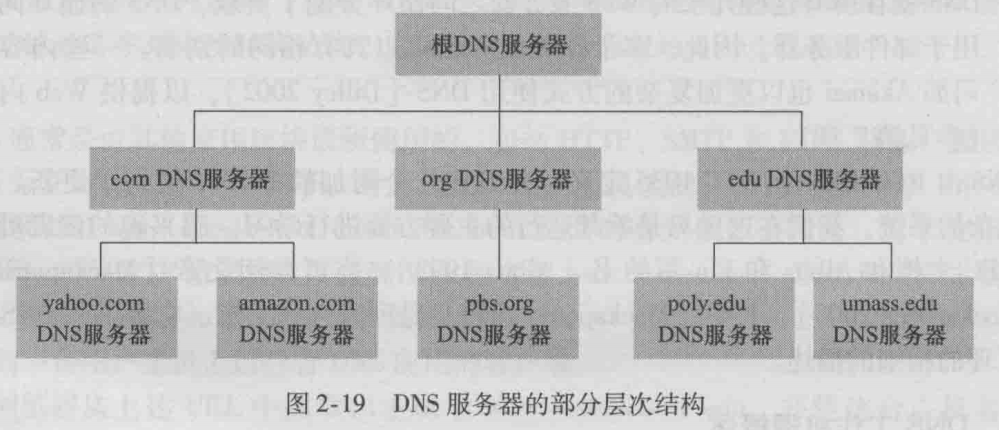

计算机网络——第二章：应用层
应用层
要求：
不考：6，7，3，4
重点：2，5
应用层协议原理
网络应用架构
- client-server
- peer-to-peer (P2P)
clint-server
通信发起端为client，被动接受端为server
- server:
- always-on host（不间断运行）
- permanent IP address
- data centers for scaling（伸缩性）
- clients:
- communicate with server
- may be intermittently connected（通过中转连接）
- may have dynamic IP addresses
- do not communicate directly with each other
P2P
- no always-on server
- arbitrary end systems directly communicate(任意端系统直接通信)
- peers request service from other peers, provide service in return to other peers
- self scalability（自伸缩性） – new peers bring new service capacity, as well as new service demands
- peers are intermittently connected and change IP addresses
- complex management
进程通信
进程(process)：在主机运行的程序。
同一个主机，两进程通过进程间通信
不同主机通过跨越计算机网络交换报文（message）而相互通信。
在client-server中，通信发起端为client，被动接受端为server，P2P应用有client和server两个进程
socket
进程通过一个称为套接字(socket)的软件接口向网络发送报文和从网络接收报文。
类似于房子的门
- 发送消息推出门外
- 发送时依赖门另一端的传输层传递报文
进程寻址
进程为了向在另一台主机上运行的进程发送分组，接收进程需要有一个地址。为了标识该接收进程，需要定义两种信息:①主机的地址;②定义在目的主机中的接收进程的标识符。
标识符包括：
- 主机IP地址，主机设备有唯一的32位IP地址
- 端口号
- HTTP server:80
- mail server:25
问:运行进程的主机IP地址是否足以识别该进程?
答:不可以，同一个主机上可以运行多个进程。
应用层协议
应用层协议（application-layer protocol）定义了运行在不同端系统上的应用程序进程如何相互传递报文。特别是应用层协议定义了:
- 交换的报文类型,例如请求报文和响应报文(request, response )。
- 各种报文类型的语法，如报文中的各个字段及这些字段是如何描述的。
- 字段的语义,即这些字段中包含的信息的含义。
- 一个进程何时以及如何发送报文，对报文进行响应的规则。
有些应用层协议是由RFC 文档定义的，因此它们位于公共域中。例如，Web 的应用层协议 HTTP(超文本传输协议[RFC 2616]）就作为一个RFC可供使用。
非公共协议：e.g., Skype
Web & HTTP
HTTP
Web 的应用层协议是**超文本传输协议（HyperText Transfer Protocol, HTTP)，它是Web的核心，在[RFC 1945]和[RFC 2616]**中进行了定义。
HTTP由两个程序实现:一个客户程序和一个服务器程序。客户程序和服务器程序运行在不同的端系统中，通过交换HTTP报文进行会话。
- 客户端：请求、接受(使用HTTP协议)并显示web objects
- 服务器：发送(使用HTTP协议)web objects
HTTP使用 TCP作为它的支撑运输协议(而不是在UDP上运行)。
- 客户端向服务器发起TCP连接(创建套接字)，80端口
- 服务器接受来自客户端的TCP连接。
- HTTP报文(应用层协议报文)在浏览器(HTTP客户端)和Web服务器(HTTP服务器)之间交换
- TCP连接关闭
因为HTTP服务器并不保存关于客户的任何信息，所以我们说HTTP是一个无状态协议（stateless protocol )。
HTTP连接
非持续连接
- 最多一个对象通过TCP连接
- 完成后connection关闭
- 下载多个对象需要多个connections
RTT(Round-Trip Time)定义：小数据包从客户机到服务器再返回的时间。包括：
- 分组传播时延
- 分组在中间路由器和交换机上的排队时延
- 及分组处理时延
HTTP响应时间：
一个RTT来发起TCP连接
一个RTT用于HTTP请求，并返回HTTP响应的前几个字节
文件传输时间
综上，非持续HTTP响应时间＝2RTT+文件传输时间

持续连接
- 多个对象可通过一个TCP连接发送
- 服务器在发送响应后保持连接
- 通过开放连接打开同一客户端/服务器，发送后续HTTP消息
- 客户端一旦遇到引用的对象，就发送请求
- 对于所有引用的对象，最少一个RTT
报文格式
HTTP请求报文
例子：
connection字段重要：表示持久化连接(keep-alive)或非持久化连接(close)
user-agent字段：可以分辨浏览器版本以及是否是手机版浏览器（mobile）
request line的方法: GET、POST、HEAD、PUT 和 DELETE，绝大部分使用GET方法。
当使用GET方法时，实体一般为空。而提交表单使用的POST方式会使用该实体。
上传表单方式：
POST，此时Web页面的特定内容依赖于用户在表单字段中输入的内容。
URL方式，使用GET方法，在请求行的URL字段设置输入：
HTTP响应报文
eg:
实体体部分是报文的主要部分，即它包含了所请求的对象本身（表示为data data data data…)。
状态行有3个字段
- 协议版本字段
- 状态码
- 相应状态信息。
cookie
- HTTP使用Pull mode, 主动获取，每次request对应一个response.
- Push mode主要用来实现实时系统，一次request后，后端数据一旦更新就发送response
- HTTP不能实现
cookie在[RFC 6265] 中定义，它允许站点对用户进行跟踪。目前大多数商务 Web站点都使用了cookie。
cookie技术有4个组件:
- 在 HTTP响应报文中的一个cookie首部行;
- 在 HTTP请求报文中的一个cookie首部行;
- 在用户端系统中保留有一个 cookie文件，并由用户的浏览器进行管理;
- 位于Web站点的一个后端数据库。
如何保持“状态”？
- 协议端点:在多个发送端/接收端保持状态交易
- cookie: HTTP消息携带状态
web cache
Web缓存器（Web cache）也叫代理服务器(proxy server),它是能够代表初始 Web服务器来满足 HTTP请求的网络实体。
cache acts as both client and server
好处：
- 减少客户端请求的响应时间
- 减少机构接入链路的流量
- 互联网的缓存:使“糟糕的内容提供者“有效地交付内容(P2P文件共享也是如此)
反向代理服务器：放在web server里，收到request后检查自己cache中是否有相对应的reponse，没有则向web server发送请求，有则直接相应（大多为静态文件html,css,image等），减轻web server压力
条件GET
目标:如果缓存有最新的缓存版本，就不发送对象
无对象传输延迟
降低链路利用率
cache:指定HTTP请求中缓存副本的日期：if - modified - since: <日期>
server:如果缓存副本是最新的，则response不包含任何对象: HTTP/1.0 304 Not Modified
FTP:文件传输协议
ftp: RFC 959
ftp server: port 21
HTTP和FTP都是文件传输协议，并且有很多共同的特点，例如，它们都运行在TCP上。然而，这两个应用层协议也有一些重要的区别。其中最显著的就是FTP使用了==两个并行==的TCP连接来传输文件：
控制连接（(control connection)，用于在两主机之间传输控制信息,如用户标识、口令，改变远程目录的命令以及“存放（put)”和“获取（get)”文件的命令。
数据连接（dataconnection)。数据连接用于实际发送一个文件。
对FTP传输而言，控制连接贯穿了整个用户会话(session)期间,但是对会话中的每一次文件传输都需要建立一个新的数据连接（即数据连接是非持续的)。
FTR服务器必须在整个会话期间保留用户的状态（state)，对用户进行追踪，大大限制了FTP同时维持的会话总数。与之相反， HTTP是无状态的，即它不必对任何用户状态进行追踪。
命令与回答
电子邮件
3个主要部件：
user agents （用户代理）
- 编写、编辑、阅读邮件信息
- 传出、传入的消息存储在服务器上
mail servers
- 邮箱：管理和维护着发送给用户的报文
- 报文队列：即将发送的报文
- SMTP协议：在不同邮件服务器中传递报文
simple mail transfer protocol: SMTP
- 分为client和server
SMTP [RFC 2821]
使用TCP传输报文，端口：25
- SMTP 用的是持续连接:如果发送邮件服务器有几个报文发往同一个接收邮件服务器，它可以通过同一个TCP连接发送这些所有的报文。
三个状态：握手、传输报文、关闭
命令与回答（like HTTP & FTP）
- request: ASCII码（报文必须为7bit的ASCII码）
- 响应：状态码和解释
实例：
P.S. SMTP一般不使用中间邮件服务器发送邮件，即使这两个邮件服务器位于地球的两端也是这样。
SMTP报文分析
5条命令：HELO, MAIL FROM, RCPT TO, DATA, QUIT
与HTTP的对比
相同点：
- 这两个协议都用于从一台主机向另一台主机传送文件，其中：
HTTP从Web服务器向Web客户（通常是一个浏览器）传送文件（或称对象）；
SMTP从一个邮件服务器向另一个邮件服务器传送文件（即电子邮件报文）。 - 当进行文件传送时，HTTP和SMTP都使用持续连接。
不同点：
- HTTP主要是拉(pull)协议，即在方便的时候，某些人在Web服务器上转载信息，用户使用HTTP从该服务器拉取这些信息。特别是TCP连接是由想接受这些文件的机器发起的。
而SMTP基本上是一个推(push)协议，即发送邮件服务器把文件推向接收邮件服务器。特别是这个TCP连接是由想发送该文件的机器发起的。 - SMTP采用7比特ASCII码格式。如果该报文包含了非7比特ASCII字符（如具有重音的法文字符）或二进制数据（如图形文件），则该报文必须按照7比特ASCII码进行编码。HTTP数据则不受该限制。
- 对于处理既包含文本又包含图形（也可能是其他媒体类型）的文档。HTTP把每个对象封装到它自己的HTTP响应报文中，而SMTP则把所有报文对象放在一个报文中。
邮件报文格式
邮件访问协议
拉协议，从邮件服务器中访问自己收到的邮件：
DNS(域名系统)
对外提供公共服务的主机(服务器)有两个地址，二者双射：
- IP(32 bit) 唯一标识，相当于身份证号
- host name（domain name）相当于名字
DNS简介
DNS(Domain Name System)是:
- 一个由分层的 DNS 服务器（DNS server）实现的分布式数据库;
- DNS 服务器通常是运行 BIND (Berkeley Internet Name Domain)软件[BIND 2012]的UNIX机器。
- 一个使得主机能够查询分布式数据库的应用层协议。
- DNS协议运行在UDP之上，使用53号端口。
DNS通常是由其他应用层协议所使用的，包括HTTP、SMTP和FTP,将用户提供的主机名解析为IP地址。
域名
top-level域名：
通用域名：
com 商业公司
.net 提供服务
.gov 政府机构
.org 非盈利机构
国家代码（CC, country-code）
- .cn, .us, .ca
域名结构：host name.authoritative name.top-level name
- www.baidu.com
- mail.baidu.com
工作机制
分布式分层：

root name servers根域名服务器：13台，返回顶级域IP
top-level domain (TLD) servers：返回权威域名IP
authoritative DNS servers：
域名解析：两种方式均针对local DNS SVR
迭代查询（少见） 递归查询 
DNS缓存
DNS记录和报文
DNS记录
A记录最重要，记录IP与名字映射
一个域名使用A type可映射多个IP, 这时DNS使用轮询做负载均衡。
报文
DNS攻击
分布式拒绝网络攻击(Distributed Denial of Service)
P2P
- 资源去中心化存放
- 通过其他主机分享的种子连接到资源拥有者获取数据
- 如果其他主机也拥有资源，同时发起连接，从两个（或多个）主机下载数据，下载速度很快（随拥有数据节点增多下载速度持续增加），且不存在单点失效
- 同时向多个主机发起连接，带宽可能很大，对互联网的压力较大
- 使用.torrent文件存放文件信息(长度，文件哈希，每一块(256k)的哈希)，通过分享哈希值(种子)使其他主机可以连接本机
- 通过tracker服务器(类似于P2P的百度)存放IP与种子的映射，寻找拥有种子的主机。
- 由于版权问题，使用分布式tracker（Distributed hash tracker），每台计算机均备份若干份信息